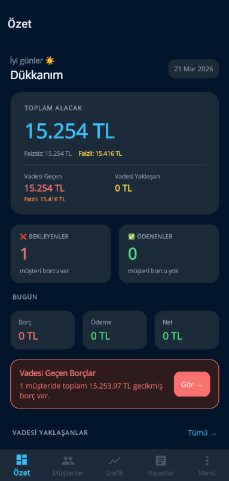
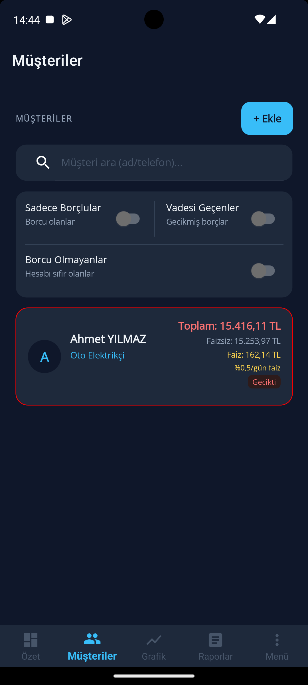
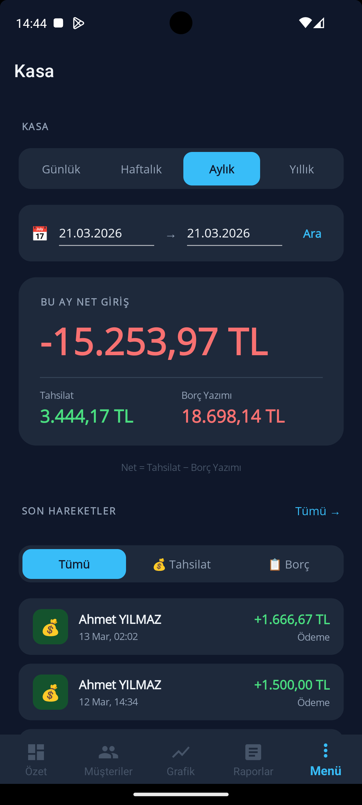

 Ana panel görüntüsü buraya gelecek
Ana panel görüntüsü buraya gelecek
Ana panel
Günlük bakiye görünümü, hızlı işlem girişi ve özet alanı için ayrılan ekran görüntüsü slotu.
Uygulama İçi Görüntüler
Bu alan, Defter Kasa için uygulama içinde gösterilecek ekran görüntülerinin düzenli biçimde toplanacağı galeri alanıdır. Gerçek görseller eklendiğinde aynı kartlar üzerinden doğrudan güncellenebilir.

Ana panel görüntüsü buraya gelecek
Günlük bakiye görünümü, hızlı işlem girişi ve özet alanı için ayrılan ekran görüntüsü slotu.

Cari listesi görüntüsü buraya gelecek
Müşteri ve borç takibinin listelendiği temel görünüm için ayrılan görsel alan.

İşlem kayıt ekranı buraya gelecek
Ödeme, tahsilat ve not girişlerinin gösterileceği ekran görüntüsü için hazırlanan slot.